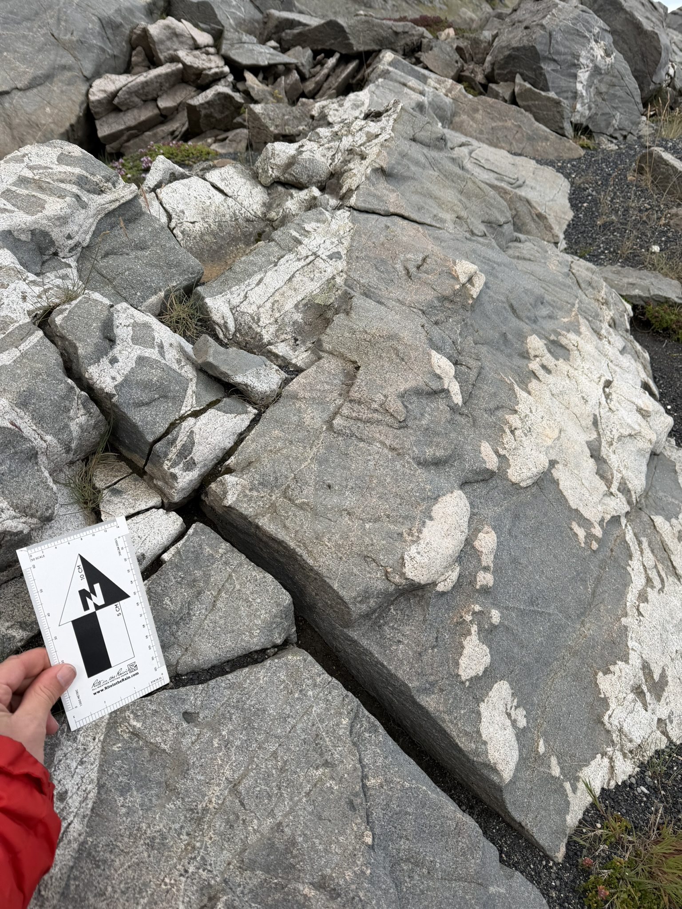

Eystrahorn, also known as Austurhorn, exposes part of an approximately 6.5-million-year-old intrusive complex beside Hvalnes (locality name). Pale micro-granite is intimately associated with dark gabbroic and doleritic rocks. These relationships form the classic "net-veined complex" (Blake 1966) and record repeated injections, as well as various degrees of mixing of mafic and silicic magma. From complete mixing (forming hybrid rocks) to varying degree of incomplete mixing (also termed mingling). The varied contacts and cross-cutting relationships provide an exceptional view of magma interaction within an eroded shallow-level magma chamber.
Blake, D. H. (1966). The net-veined complex of the Austurhorn intrusion, southeastern Iceland. The Journal of Geology, 74(6), 891–907. Weidendorfer, D., Mattsson, H. B., & Ulmer, P. (2014). Dynamics of magma mixing in partially crystallized magma chambers: Textural and petrological constraints from the basal complex of the Austurhorn intrusion, SE Iceland. Journal of Petrology, 55(9), 1865–1904. Thorarinsson, S. B., & Tegner, C. (2009). Magma chamber processes in central volcanic systems of Iceland: Constraints from the layered gabbro of the Austurhorn intrusive complex. Contributions to Mineralogy and Petrology, 158(2), 223–244.